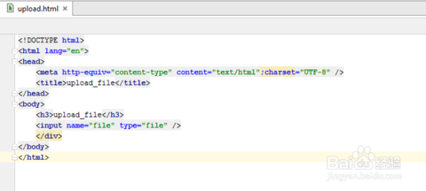
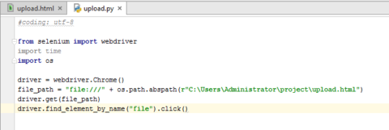
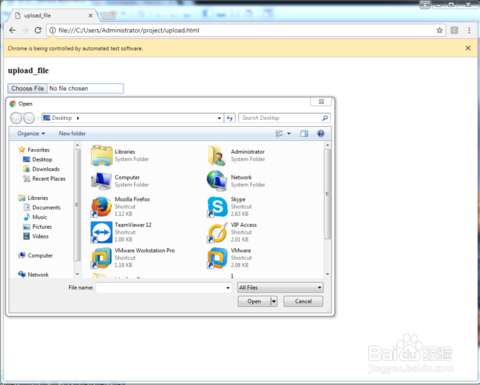
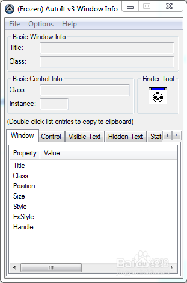
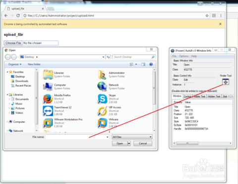
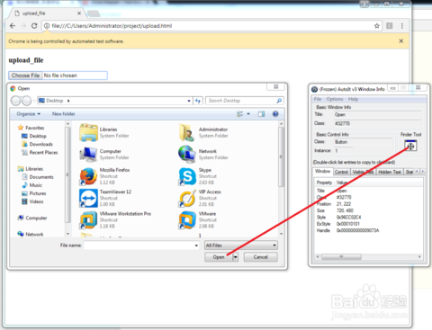
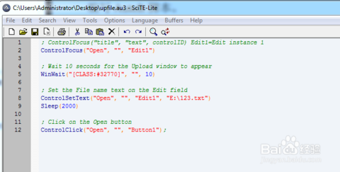
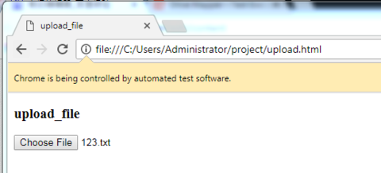
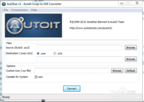

Au3脚本是AutoIt3 Windows自动安装脚本语言，AutoIt 是一种自动控制工具。它可以被用来自动完成任何基于 Windows 或 DOS 的简单任务。它最初被设计用来自动完成安装那些其它方法不能自动安装的软件。那么现在我们就通过举例来查看一下怎么使用AutoIt工具实现自动上传文件到网页
1/9
2/9
简单编写一个upload.html,如左图；用谷歌浏览器打开如右图所示。


3/9
下面编写Python自动化脚本，运行之后结果如下：


4/9
保持此窗口打开，在开始菜单栏中打开autoit window info,如图所示：

5/9
左击Finder Tool下面的按钮，分别拖拽到窗口的输入框和打开按钮，如图获得对应的属性值


6/9
然后打开SCITE Script Editor编辑器，编写AutoIt脚本，如下图所示：下一步，运行测试一下这个脚本是否有效（注意：一定要保持窗口处于打开状态），运行之后的结果看右图


7/9
下面我们需要将上面的脚本转为exe格式，为了方便Python的调用；打开Compile Script to.exe工具，将其生成为exe可执行文件。点击“Browser”按钮，选择upfile.au3文件，点击“Convert”转换为upfile.exe如图所示：

8/9
下面就可以直接在Python的脚本中对upfile.exe进行调用啦。脚本截图如下：
9/9
运行Python脚本之后，最终文件自动上传到网页上，结果如图所示：